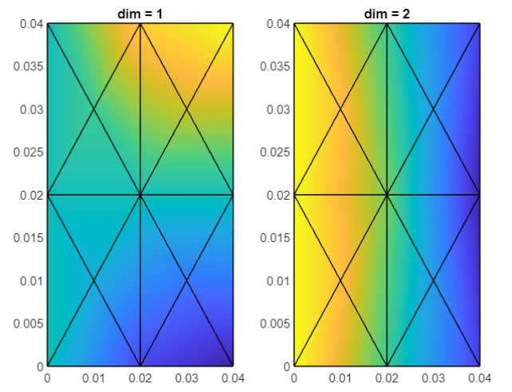

Introduction
In these tutorial files, you will learn how to use the various modules of Swan in order to generate your own FEM and Topology Optimization simulations. In each tutorial, a single building block will be analyzed, with some examples to make it easier. If you have any questions, feel free to create a new issue in the GitHub repository.
Running
The first step to run an Elastic FEM analysis is the generation of the mesh file using GiD, which is further explained in the Tutorial00_Mesh file. Once that is done, a FemDataContainer can be created using said file:
file = 'test2d_triangle';
a.fileName = file;
s = FemDataContainer(a);
The sole purpose of this is to prepare the input mesh and boundary conditions of the simulation. In order to run the simulation, the following code is used:
fem = FEM.create(s);
fem.solve();
Results
It really is that simple. All the results are stored in the resulting fem variable, which is an ElasticProblem. The results are stored in three public variables:
- fem.uFun contains the displacement of the mesh at its nodes
- fem.stressFun contains the stress of the mesh at its elements
- fem.strainFun contains the strain of the mesh at its elements
Each function can be plotted using the following code:
fem.uFun.plot()

Alternatively, these functions can be printed using GiD (default option) or Paraview:
fem.uFun.print('results_fem_disp') % print using GiD
fem.uFun.print('results_fem_disp', 'GiD') % print using GiD
fem.uFun.print('results_fem_disp', 'Paraview') % print using Paraview
In fact, the whole Elastic Problem can be printed using the same print function:
fem.print('results_fem', 'Paraview') % print using Paraview
Miss anything?
Feel free to create a new Issue in Swan's GitHub repository with any questions or doubts you may have. We will get back to you as soon as possible!